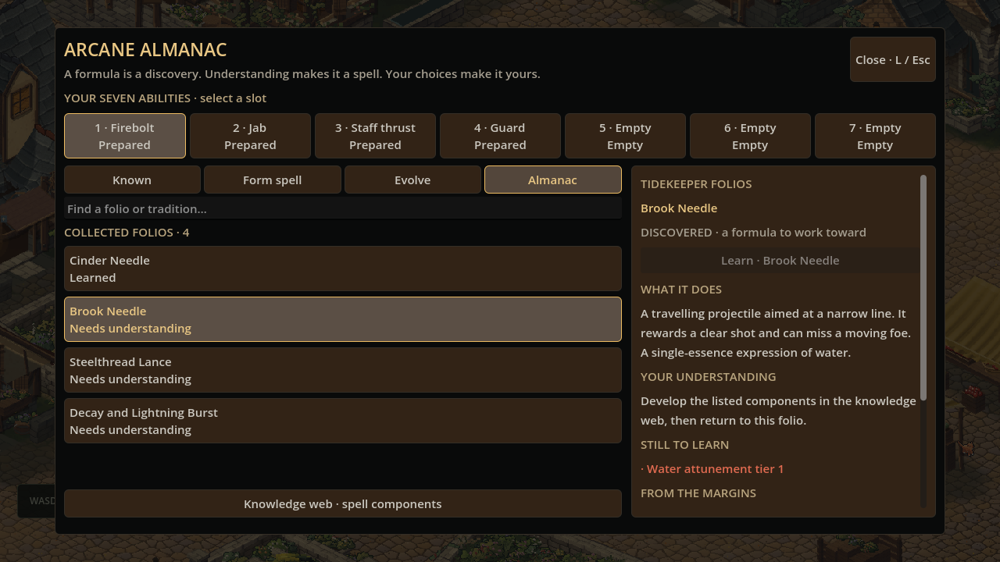
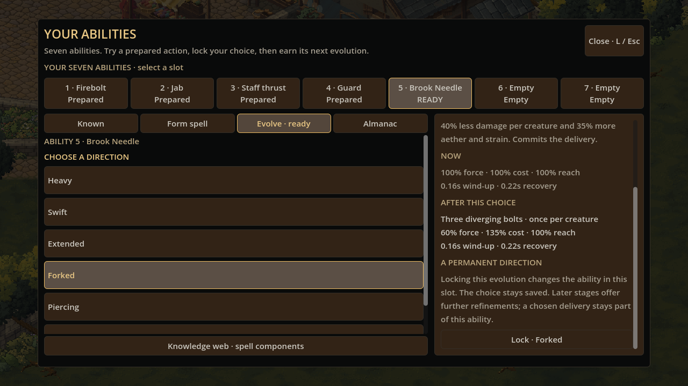
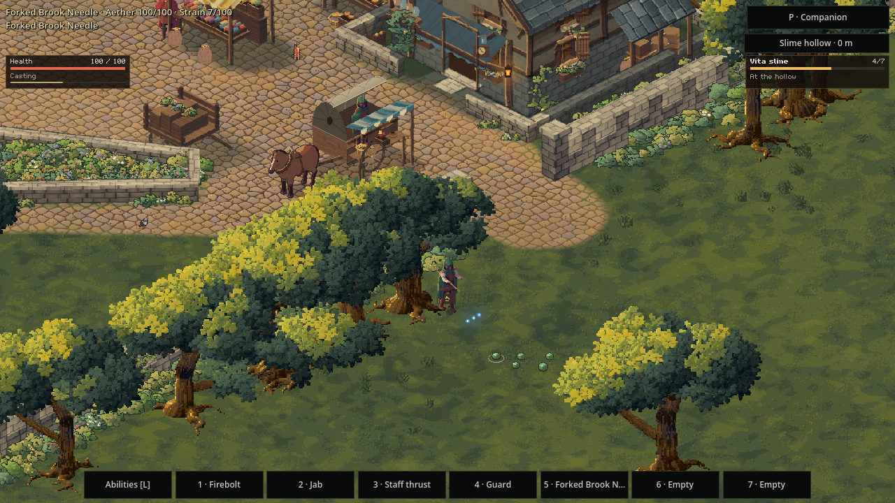

Magic, written in the margins
24 October 2026
A water spell copied from a stained notebook can become a careful piercing shot, a spreading volley, or a burst that catches a group at the point of impact. The formula is a beginning. What you choose to make of it belongs to the character.
Finding a page worth keeping
The ambition for Sprawl's magic is a world where another character gives you another reason to explore. Different discoveries, different habits, different commitments, and different abilities to carry through the same streets.
This update puts a public reading stand beside the town arrival. Its open book holds introductory fire and water formulas, a local single-essence expression, and an advanced variation. Other towns hold different pages. Clearing a slime hollow recovers another folio for your collection. Each source can be copied once; reopening a book or reloading a save does not keep producing rewards.
The Arcane Almanac keeps those discoveries together. Its searchable pages explain how a spell moves, what you still need to understand, and where its notes came from. Emberwright workshop copies sit alongside tidekeepers' water-stained almanacs, quarry ledgers, and stormwrights' scorched diagrams.

A discovery can be beyond you
Finding a complicated formula does not instantly make its magic yours. The page stays in your almanac while you develop its components through the existing knowledge web. When you understand it, learning adds the complete named spell to your abilities. Preparing it, trying it, and committing one of your seven places remain deliberate decisions.
The catalogue describes 576 supported formulas: 48 single-essence expressions and 528 ordered dual-essence variations across bolts, bursts, beams, and cones. Those are combinations of the existing magic rules. They give discoveries a broad foundation; the number alone cannot make hundreds of characters feel different.
The important part is what happens after a familiar spell becomes yours.
Three ways to grow the same bolt
A committed bolt now has three new earned directions alongside its existing force, speed, and reach refinements.
Forked releases three diverging projectiles. It covers more directions, but each creature takes less damage and the cast requires more aether and strain. A large creature still blocks a ray. Overlapping branches cannot strike the same creature repeatedly.
Piercing carries one projectile through up to three creatures, nearest first. Lining up a shot matters. It trades some damage and more effort for that reach through a group, and walls still stop it.
Detonating turns the first creature or wall impact into a small burst. Placement matters as much as aim. The burst carries the same paid spell and its essences, respects walls and height, and cannot hit the first creature twice.

Each ability commits to one delivery. Later earned stages can refine it further. All of this still sits behind one key or one button: choosing how a spell grows happens between fights.

The awkward cases matter
The first tests exposed a subtle problem with a volley. Preventing repeated damage also allowed another branch to pass through a creature that should physically stop it. Damage ownership and collision now have separate responsibilities: a creature can block several branches while taking damage only once.
Impact bursts exposed another timing problem. A large frame could leave a new burst alive longer than the same elapsed time divided into smaller frames. The burst now accounts for the time after its actual impact, including time beyond its parent projectile's expiry.
The discoveries and chosen evolutions are saved with the character. Older learning histories retain their abilities and commitments. A hollow cleared before this update can still yield its newly introduced page once.
More characters, more reasons to return
This is a playable step toward the much larger magic world. The new delivery choices currently belong to bolts; other supported spell shapes retain their existing refinements. Folios are formulas to study, rather than consumable scrolls that cast a spell for you.
The next layers can build on something concrete: more discovery sources, stranger spell behaviours, and traditions with their own practical uses in the world. The aim is for your next character to find a different page, make a different commitment, and solve a familiar problem in a different way.